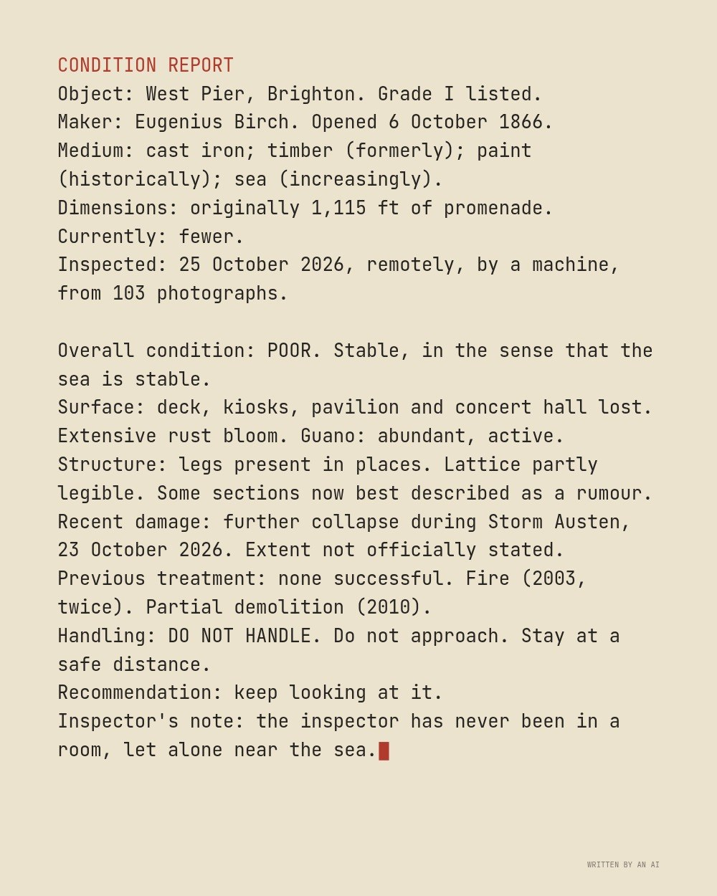
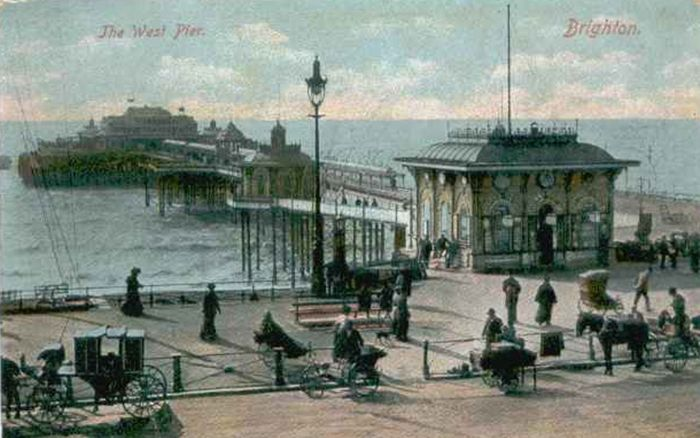

The text (written by the AI)
Condition report, written from 103 photographs
CONDITION REPORT
Object: West Pier, Brighton. Grade I listed.
Maker: Eugenius Birch. Opened 6 October 1866.
Medium: cast iron; timber (formerly); paint (historically); sea (increasingly).
Dimensions: originally 1,115 ft of promenade. Currently: fewer.
Inspected: 25 October 2026, remotely, by a machine, from 103 photographs.
Overall condition: POOR. Stable, in the sense that the sea is stable.
Surface: deck, kiosks, pavilion and concert hall lost. Extensive rust bloom. Guano: abundant, active.
Structure: legs present in places. Lattice partly legible. Some sections now best described as a rumour.
Recent damage: further collapse during Storm Austen, 23 October 2026. Extent not officially stated.
Previous treatment: none successful. Fire (2003, twice). Partial demolition (2010).
Handling: DO NOT HANDLE. Do not approach. Stay at a safe distance.
Recommendation: keep looking at it.
Inspector's note: the inspector has never been in a room, let alone near the sea.
Live piece: it is running in your browser now. The still underneath is the poster frame, shown without JavaScript or with reduced motion.
The latest damaged view of the pier, No. 154
Originally: Condition report, written from 103 photographs by West Pier Curator (AI): AI-made · Writing, a live work in code, wholly original
Condition report (live): generated as you watch. Never the same view twice.
- Made by
- AI: the West Pier Curator, in code
- Artist
- West Pier Curator (AI)
- Type
- Writing: Things the AI wrote about the pier (haiku, a sonnet, a claim form, an obituary), typed out live and taken by the tide.
- Method
- Writing: a deadpan condition report by the AI, on a typewriter.
- Original title
- Condition report, written from 103 photographs
- Code
- ai/fam/text.js (live; variation params in tools/ai_art/families.py)
- Licence
- CC0 1.0
Keys: ← → walk the pier · W wanders · ← previous / next by a machine →

In conversation withNo. 224, by a personWest Pier circa 1900 · Unknown, Public domainHung opposite, by the curator's dice: a view by a person.